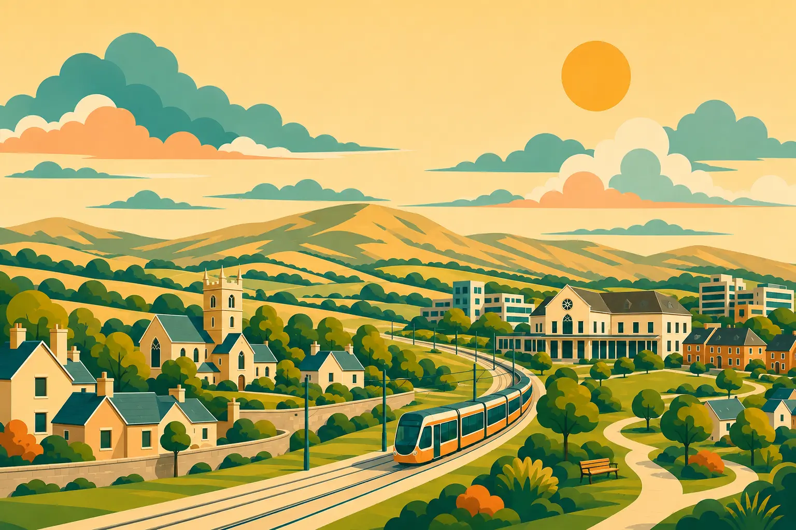

Our area.
Our story.
Together.
Discover local stories, find useful support and take part in community life.

Community in action
Good things happen when we come together.
Our August community potluck brought more than 135 people together at Saggart Schoolhouse.
Swipe to browse. Use the previous and next buttons or arrow keys. Select a photograph to view it in full.
1 of 10
Neighbours together at Saggart Schoolhouse
Discover something new about your area.
Try the 10-question quizLocal services
Clear links to services and organisations.